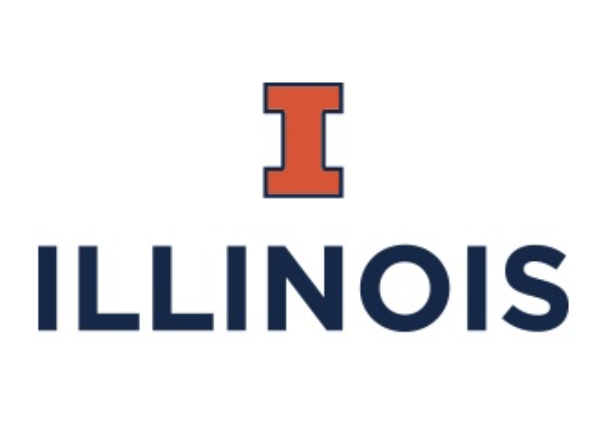

Courses Taught
- Linear Optimization, Winter 2026, Department of Computer Science and Operations Research (DIRO), University of Montreal
- Methods of Operations Research [IFT-6575], Department of Computer Science and Operations Research (DIRO), University of Montreal, Instructor, Fall 2024, Fall 2025
- Dynamic Programming [IFT-6521], Department of Computer Science and Operations Research (DIRO), University of Montreal, Instructor, Winter 2024, Winter 2025, Winter 2026
- Business Statistics [MGCR 271], Desautels Faculty of Management, McGill University, Instructor, Summer 2022
|
|
Information for PhD applicants
My research focuses on data-driven decision-making under uncertainty. For a quick overview, you may refer to my column in the newsletter of the Stochastic Programming Society. An elaborate survey of this area can be found in a recent article on contextual stochastic optimization (link). My work draws on Operations Research, Economics, Game Theory, Statistics, and Machine Learning to develop new models and algorithms, with applications to risk quantification in insurance, finance, and security.
I am currently looking for PhD students with a strong background in mathematics and programming. If you are interested in decision-making under uncertainty, please email me a brief description of your interests with the subject line: “PhD application – [Your Research Interest]”.
|
|
Students
PhD Students
- Gabriel Fortin-Leblanc (co-supervised with Emma Frejinger)
Master's Students
- Maël Charpentier (co-supervised with Margarida Carvalho)
- Julien Charles-Cyr
|
News
- I look forward to attending Mathematical Foundations of Diffusion Models for Efficient Sequential Data Modeling in Chicago, August 3-13, 2026 .
- Revised Preprint, "Mitigating Optimistic Bias in Entropic Risk Estimation and Optimization" (co-authors Erick Delage and Angelos Georghiou), with new theoretical results
- Organized, with Margarida Carvalho and Quentin Cappart, CRM Workshop: Combinatorial Optimization and Data Science, May 7 - 9, 2025.
- Preprint, "Data-driven decision-making under uncertainty with entropic risk measure" with Erick Delage and Angelos Georghiou, available online
- Invited talk at IEMS Seminar, Northwestern University, October 21, 2025
- SPS Newsletter on Contextual Stochastic Optimization Methods for Decision Making
Under Uncertainty
- Preprint, "Subsidizing a New Technology: An Impulse Stackelberg Game Approach" with Georges Zaccour, available online
- Our article, "A Survey of Contextual Optimization Methods for
Decision Making under Uncertainty", is now published (online) in European Journal of Operational Research
|
Mitigating optimistic bias in entropic risk estimation and optimization with an application to insurance
Utsav Sadana, Erick Delage, Angelos Georghiou
arXiv / Slides
|
Subsidizing a New Technology: An Impulse Stackelberg Game Approach
Utsav Sadana, Georges Zaccour
arXiv /
Talk (Dynamic Games and Applications Seminar) /
Slides
|
A Survey of Contextual Optimization Methods for Decision Making under Uncertainty
Utsav Sadana, Abhilash Chenreddy, Erick Delage, Alexandre Forel,
Emma Frejinger, Thibaut Vidal
European Journal of Operational Research, 2025
arXiv /
Tutorial Talk (SPS seminar) /
Slides
|
The value of randomized strategies in distributionally robust risk averse network interdiction problems
Utsav Sadana, Erick Delage
INFORMS Journal on Computing, 2023
|
Feedback Nash Equilibria in Differential games with Impulse Control
Utsav Sadana, Puduru Viswanadha Reddy, Georges Zaccour
IEEE Transactions on Automatic Control, 2023
|
Sampled-data Nash equilibria in differential games with impulse controls
Utsav Sadana, Puduru Viswanadha Reddy, Tamer Başar, Georges Zaccour
Journal of Optimization Theory and Applications, 2021
|
Nash equilibria in nonzero-sum differential games with impulse control
Utsav Sadana, Puduru Viswanadha Reddy, Georges Zaccour
European Journal of Operational Research, 2021
|
Bayesian Networks and Games of Deterrence
Michel Rudnianski, Utsav Sadana, Hélène Bestougeff
Recent Advances in Game Theory and Applications, Springer (2016)
|
|  |
Coordinated Science Lab, UIUC, Illinois (Sep 2019-Feb 2020)
|
Selected Awards
- GERAD Postdoctoral Scholarship (2021-2022)
- FRQNT Postdoctoral Research Scholarship (B3X) (2021-2023)
- PBEEE/Quebec-India PhD Research Scholarship (2019-2021)
- FRQNT Doctoral Research Award (B2X) (2019-2022)
- FRQNT International Internship Scolarship (2018)
- J.A. Deseve Excellence Scholarship (2018)
|
|